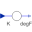
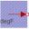
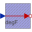
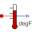

FahrenheitComponents with Fahrenheit input and/or output |
|
Package Contents
|
Conversion block from degFahrenheit to Kelvin |
|
|  |
Conversion from Kelvin to degFahrenheit |
|  |
Fixed temperature boundary condition in degFahrenheit |
|  |
Variable temperature boundary condition in degFahrenheit |
|  |
Absolute temperature sensor in degFahrenheit |
Information
This information is part of the Modelica Standard Library maintained by the Modelica Association.
The components of this package are provided for the convenience of people working mostly with Fahrenheit units, since all models in package HeatTransfer are based on Kelvin units.
Note, that in package SIunits.Conversions, functions are provided to convert between the units Kelvin, degree Celsius, degree Fahrenheit and degree Rankine. These functions allow, e.g., a direct conversion of units at all places where Kelvin is required as parameter. Example:
import SIunits.Conversions.*;
Modelica.Thermal.HeatTransfer.HeatCapacitor C(T0 = from_degF(70));